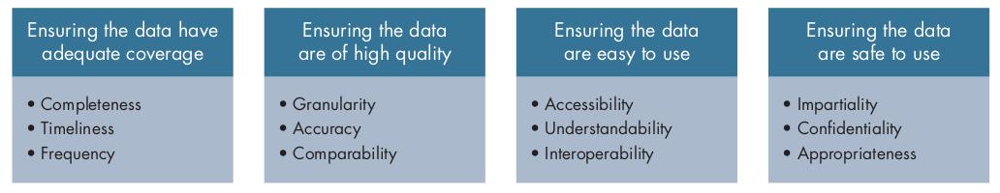
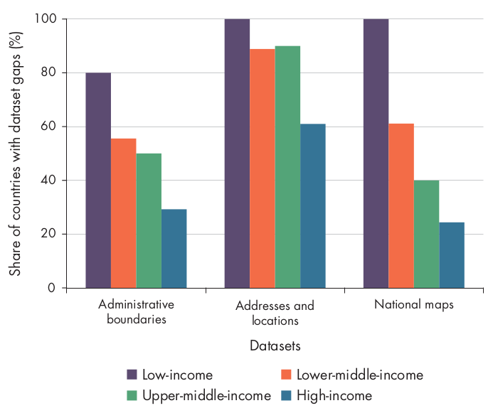
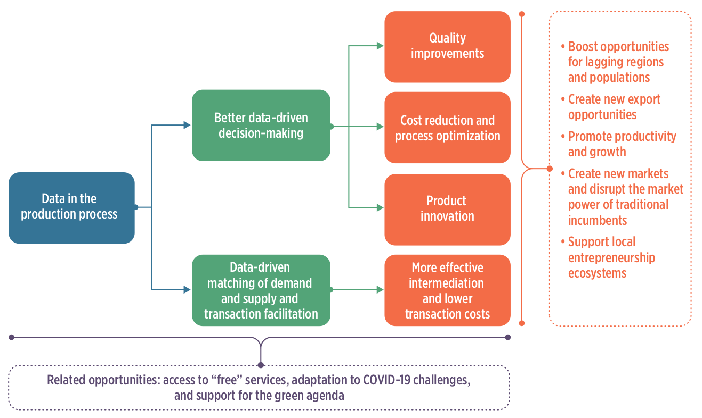

Session 1
Global landscape of data governance institutions and frameworks
![]()
Definitions
What is data?
“When we refer to data, we mean information about people, things and systems. … Data about people can include personal data, such as basic contact details, records generated through interaction with services or the web, or information about their physical characteristics (biometrics) - and it can also extend to population-level data, such as demographics. Data can also be about systems and infrastructure, such as administrative records about businesses and public services. Data is increasingly used to describe location, such as geospatial reference details, and the environment we live in, such as data about biodiversity or the weather. It can also refer to the information generated by the burgeoning web of sensors that make up the Internet of Things.”
- UK National Data StrategyWhat is data governance?
A system of robust legal frameworks, ethical guidelines, standards, and processes that ensures an organisation’s data is accurate, consistent, secure, and compliant throughout its lifecycle.

What is the data lifecycle?

Public vs Private intent data
Public intent data
Public intent data is data collected for public purposes.
Public intent data is a foundation of public policies and can play a transformative role in the public sector.
Private intent data
Private intent data is data collected by the private sector as part of routine business processes.
Private intent data can drive innovation, lower transaction costs, and improve productivity, competitiveness, and economic growth.
Activity 1: Tell me about your data
Activty 1 - Mechanics
-
Move into the group assigned to you.
- TAMRI Hanoi + TAMRI Ho Chi Minh City
- Tam Anh Ho Chi Minh City
- Tam Anh Hanoi
- Eplus + SMART Research
- VNVC + Calif
- Department of Health (Hanoi and Ho Chi Minh City) + Department of Science and Technology Hanoi
Activity 1 - Mechanics
-
Individually, write keywords and/or key terms/concepts that describe any one or all data that you work with and/or are in charge of
- write on the provided meta cards;
- use keywords or key phrases and not sentences;
- one keyword or key phrase in one meta card;
- you can use as many meta cards as you want/need.
Activity 1 - Mechanics
-
Post your meta cards onto the assigned wall or table for your group.
- Make sure that your meta cards are separate from everyone else’s in your group;
- Make sure that your meta cards are posted in such a way that the text in each card is readable (don’t make the cards overlap).
Activity 1 - Mechanics
-
Within your group, find a partner and discuss and describe with each other the data that you work with and/or are in charge of
- You will be given 5 minutes to share with your partner;
- After 5 minutes, find a new partner and then discuss and describe with each other;
- We will do three rounds of partner discussion within group.
Activty 1 - Mechanics
-
With another group, find a partner in that group and then ask them to discuss and describe to you the data they work with and/or in charge of
- Specific groups will be chosen to approach another group;
- The members of the visiting group will find a partner in the hosting group;
- The members of the visiting group will ask their partner from the hosting group about the data they work with and/or are in charge of. They will have about 5 minutes for this discussion;
- After five minutes, the members of the visiting group should find a new partner among the members of the hosting group and then start asking about the data they work with and/or are in charge of;
- After three rounds, the hosting group will then be asked to visit another group and do the same steps while the visiting group will then host a different group.
Public intent data
Types of public intent data
Administrative data
Census data
Sample surveys
Citizen-generated data
Machine-generated data
Geospatial data
Maximising value of public intent data

Three pathways for public intent data to add value
Improving service delivery
Prioritising scarce resources
Holding government accountable and empowering individuals
Gaps in public intent data
Coverage is inadequate
Lack of timeliness, frequency, and completeness.
Large gaps in geospatial data in lower-income countries

Data quality is poor
Lack of granularity, accuracy, and comparability.
Lack of data disaggregation
Lower-income countries have less comparable poverty data

Data not easy to use
- Lack of accessibility, understandability, and interoperability.
| Indicator | Low-income | Low-middle-income | Upper-middle-income | High-income |
|---|---|---|---|---|
| Openness score (0–100) | 38 | 47 | 50 | 66 |
| Available in machine readable format (%) | 37 | 51 | 61 | 81 |
| Available in non-proprietary format (%) | 75 | 85 | 81 | 84 |
| Download options available (%) | 56 | 68 | 68 | 78 |
| Open terms of use/license (%) | 11 | 19 | 22 | 44 |
Data not safe to use
Data not immune to influence from stakeholders
Data not stored securely - too common in government and private sector databases
Data not properly de-identified
Why gaps persist in public intent data
Deficiencies in financing
Deficiencies in technical capacity
Deficiencies in governance
Deficiencies in data demand
Private intent data
Data in the production process

Role of data in economic activity

Data inputs for economic activity
Data collection by firms - “digital footprint”
Use of public intent data by businesses
Sectors transformed by use of data in the production process
Finance
Agriculture
Health
Education
Transport and logistics
Finance sector
Alternative credit scoring algorithms - use of an individual’s digital footprint to train machine learning algorithms to identify, score, and underwrite credit.
Payment systems - digital payments; mobile payments.
Use of transaction data for product development - Mastercard’s Tourism Insights service allows leveraging big data to provide information on travellers’ preferences.
Distributed ledger technology - blockchain; eliminates financial intermediaries; embedding rules into smart contracts simplifies negotiation and verification processes.
Agriculture sector
Remote sensing and geographic information systems - analysis of these data provide insights into farming operations; smart farming
Internet-of-things (IoT) and embedded devices for monitoring farm and livestock conditions and farm operations
Use of data to provide a range of services along the agriculture value chain
Use of data to improve food traceability
Education
video conferencing/video communication tools
digital supplemental learning platforms
intelligent adaptive education
Transport and logistics sector
Digital freight matching
Digital courier logistics
IoT-enabled cold chain
Risks to market structure from platform firms

Risks and adverse outcomes of data-driven businesses
Increase propensity of dominant firms emerging
Potential for exploitation of individuals
Potential to increase inequality within and among countries

Tâm Anh Oxford Partnership